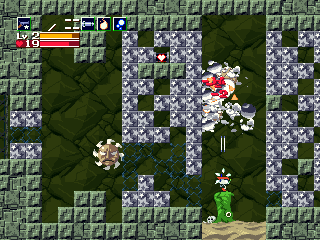

（DoConfig.exe で変更可）
■アクション

| 左右移動 | "←"・"→" |
| 上を向く | "↑" |
| 調べる（空中では下を向く） | "↓" |
| ジャンプ | "Ｚ" |
| 弾を撃つ | "Ｘ" |
| 武器変更 | "Ａ"・"Ｓ" |
| もちもの画面 | "Ｑ" |
| マップ表示（アイテム必要） | "Ｗ" |
■会話時

| はい・いいえ 選択 | "←"・"→" |
| 会話を進める | "Ｘ" or "Ｚ" |
■もちもの画面
| 選択 | カーソル |
| 調べる・使う | "Ｚ" |
| 閉じる | "Ｘ" |
■ESCキーで、終了とリセットができます。
| 左右移動 | "←"・"→" |
| 上を向く | "↑" |
| 調べる（空中では下を向く） | "↓" |
| ジャンプ | "Ｚ" |
| 弾を撃つ | "Ｘ" |
| 武器変更 | "Ａ"・"Ｓ" |
| もちもの画面 | "Ｑ" |
| マップ表示（アイテム必要） | "Ｗ" |
| はい・いいえ 選択 | "←"・"→" |
| 会話を進める | "Ｘ" or "Ｚ" |
| 選択 | カーソル |
| 調べる・使う | "Ｚ" |
| 閉じる | "Ｘ" |